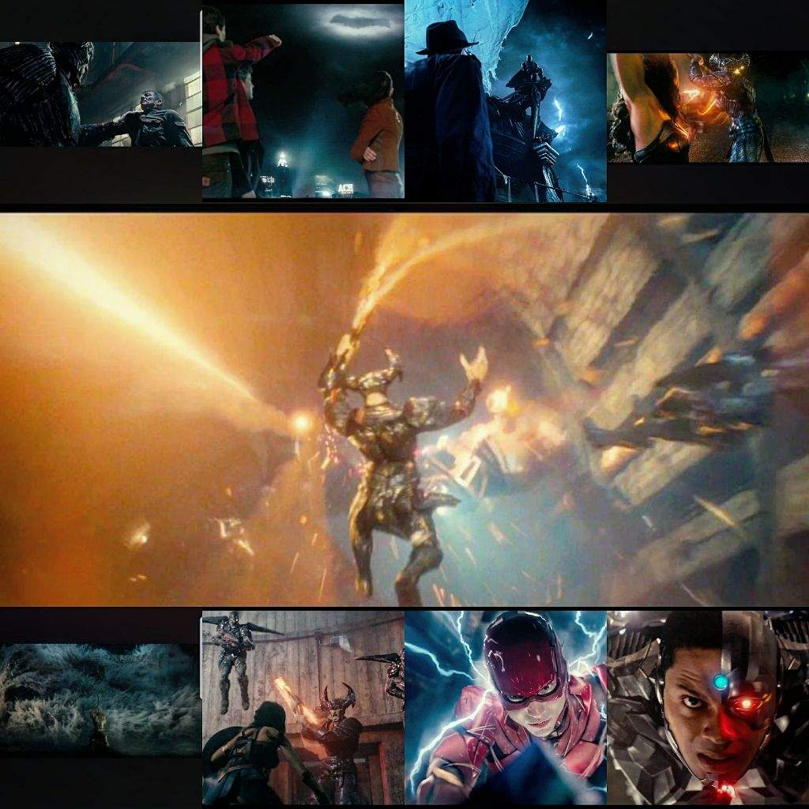
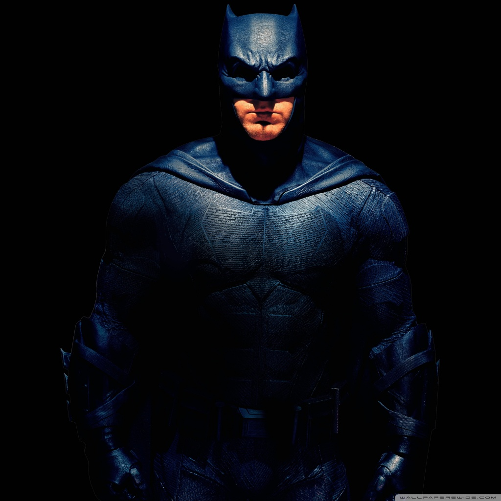
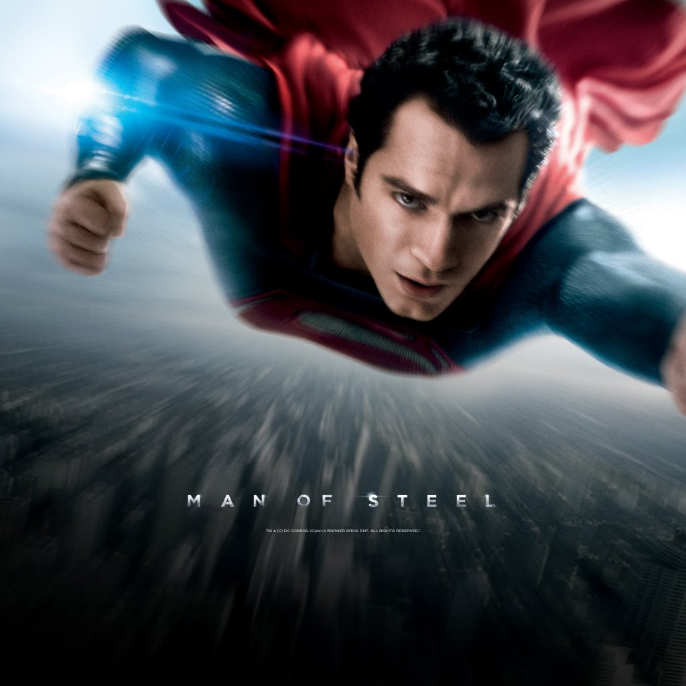
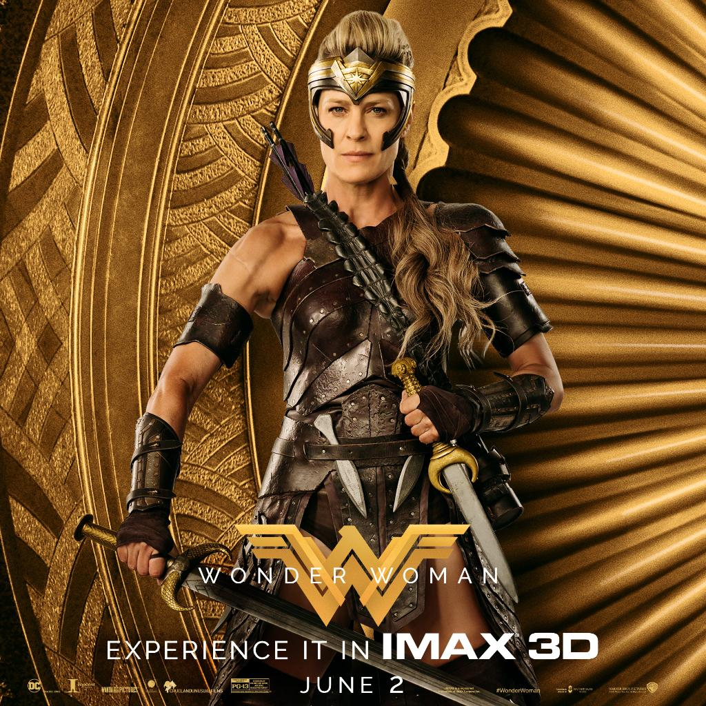
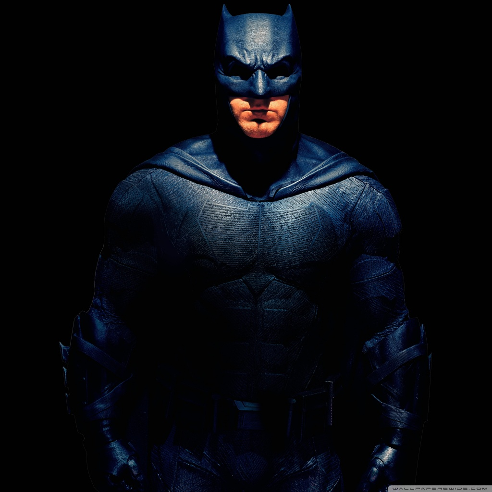
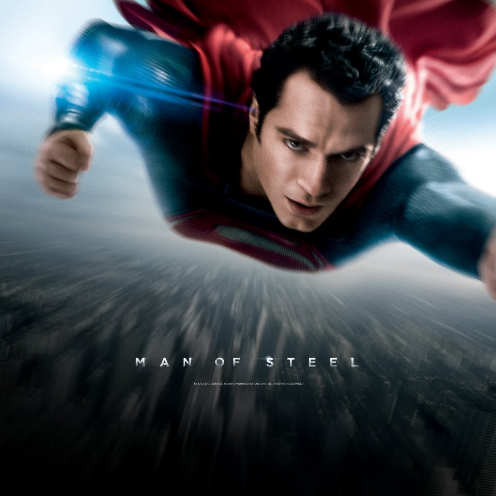
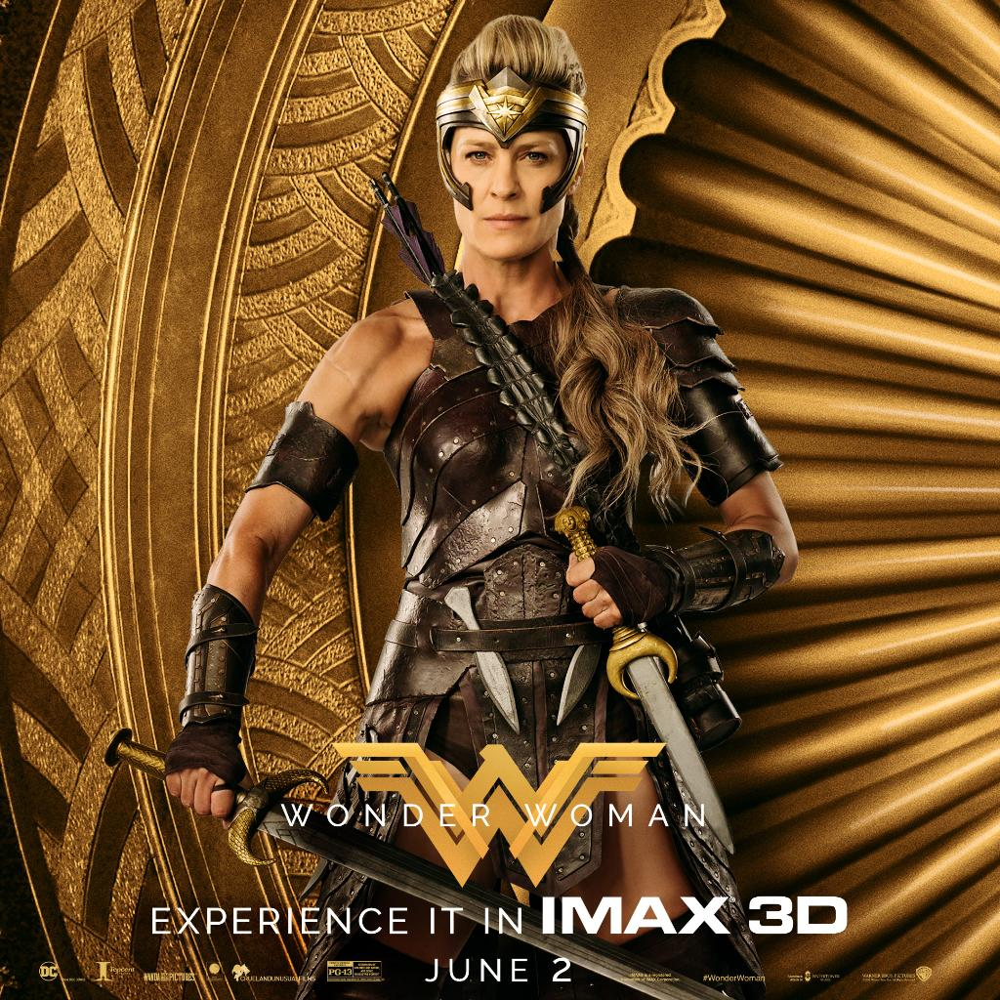

The Justice League is a team of fictional superheroes appearing in American
comic books published by DC Comics. The Justice League was conceived by
writer Gardner Fox, and they first appeared together in The Brave and the
Bold #28 (March 1960).The Justice League is an assemblage of superheroes
who join together as a team.
The six original members were:
Aquaman
Batman
Flash
Green Lantern
Superman
Wonder Woman
The team roster has rotated throughout the years, consisting of many
superheroes from the DC Universe, such as
Atom
Black Canary
Cyborg
Green Arrow
Green Lantern (John Stewart)
Elongated Man
Hawkgirl
Hawkman
Plastic Man
Orion
Red Tornado
Stargirl
Captain Marvel/Shazam
Zatanna
and among others
Recent Case:

Thousands of years ago, Steppenwolf and his legions of Parademons
attempt to take over Earth with the combined power of three Mother
Boxes. They are foiled by a unified army that includes the Olympian
Gods, Amazons, Atlanteans, mankind, and the Green Lantern Corps.
After repelling Steppenwolf's army, the Mother Boxes are separated
and hidden in locations on the planet. In the present, the world is
in mourning over the death of Superman, which triggers the Mother
Boxes to reactivate and Steppenwolf's return to Earth in an effort
to regain favor with his master, Darkseid. Steppenwolf aims to gather
the artifacts to form "The Unity", which will destroy Earth's ecology
and terraform it in the image of Steppenwolf's homeworld. Steppenwolf
retrieves the Mother Box from Themyscira, prompting Queen Hippolyta to
warn her daughter Diana of Steppenwolf's return. Diana joins Bruce
Wayne in his attempt to unite other metahumans to their cause, with
Wayne going after Arthur Curry and Barry Allen, while Diana tries to
locate Victor Stone. Wayne fails to persuade Curry, but manages to
recruit an enthusiastic Allen onto the team. Although Diana fails to
convince Stone to join, he agrees to help them locate the threat if he
discovers their location. Stone later joins the team after his father
Silas, along with several other S.T.A.R. Labs employees, were kidnapped
by Steppenwolf seeking to acquire the Mother Box from mankind. Steppenwolf
attacks Atlantis to retrieve the next Mother Box, forcing Curry into action.
The team receives intel from Commissioner James Gordon leading them to
Steppenwolf's army, based in an abandoned facility under Gotham Harbor.
Although the group manages to rescue the kidnapped employees, the facility
is flooded during combat, which traps the team until Curry helps delay the
flood so they can escape. Stone retrieves the last Mother Box, which he had
hidden, for the group to analyze. Stone reveals that his father used the
Mother Box to rebuild Stone's body after an accident almost cost him his life.
Facing overwhelming odds against Steppenwolf's army, Wayne decides to use the
Mother Box to resurrect Superman, not only to help them fight off Steppenwolf's
invasion, but also to restore hope to mankind. Diana and Curry are hesitant
about the idea, but Wayne forms a secret contingency plan in case Superman
returns as a nemesis. Clark Kent's body is exhumed and placed in the
amniotic fluid of the genesis chamber of the Kryptonian ship alongside the
Mother Box, which in turn activates and successfully resurrects Superman.
However, Superman's memories have not returned, and he attacks the group
after Stone accidentally launches a projectile at him. On the verge of being
killed by Superman, Batman enacts his contingency plan: Lois Lane. Superman
calms down and leaves with Lane to his family home in Smallville, where he
reflects and attempts to recover his memories. With the final Mother Box
unguarded, Steppenwolf retrieves it with ease. Without Superman to aid them,
the five heroes travel to a village in Russia where Steppenwolf aims to
unite the Mother Boxes once again and remake Earth. The team fights their
way through the Parademons to reach Steppenwolf, although they are unable to
distract him enough for Stone to separate the Mother boxes. Superman arrives
and assists Allen in evacuating the city, as well as Stone in separating the
Mother Boxes. The team defeats Steppenwolf, who, overcome with fear, is attacked
by his own Parademons before they all teleport away. In the aftermath
of the battle, Bruce and Diana agree to set up a base of operations for the
team, with room for more members. Diana steps back into the public spotlight
as a hero; Barry acquires a job in Central City's police department, impressing
his father; Victor continues to explore and enhance his abilities with his
father in S.T.A.R. Labs; Arthur returns to Atlantis; Batman continues protecting
Gotham; and Superman resumes his life as reporter Clark Kent. In a post-credits
scene, Lex Luthor escapes from Arkham Asylum and recruits Slade Wilson to
form their own league.
 




